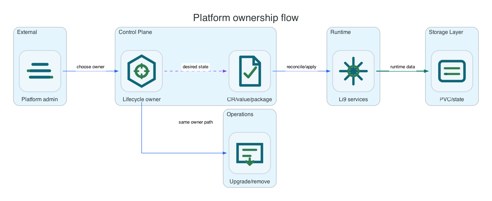

Platform reference pages.
Platform reference is split by installation method. OpenShift uses CRDs and OLM, Helm uses chart values, Linux uses packages and systemd, and Windows uses MSI/ZIP artifacts and Windows services. S3 API behavior stays common across all platforms.

Platform-Specific References
Start with the platform that owns lifecycle for your installation. These pages explain the control surface, generated resources, operational commands, and where to configure the same Li9 S3 runtime capabilities on that platform.
Runtime And Infrastructure References
These pages describe behavior that belongs to the Li9 S3 runtime itself. They are relevant on every platform, but the place where you configure them is platform-specific.
OpenShift Operator References
These pages only apply when the OpenShift operator is installed and CRDs are the management API.